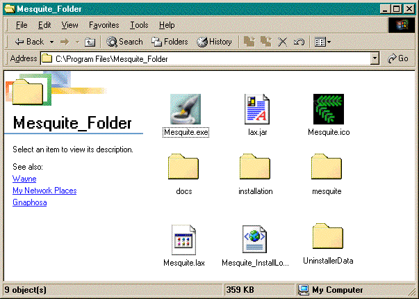
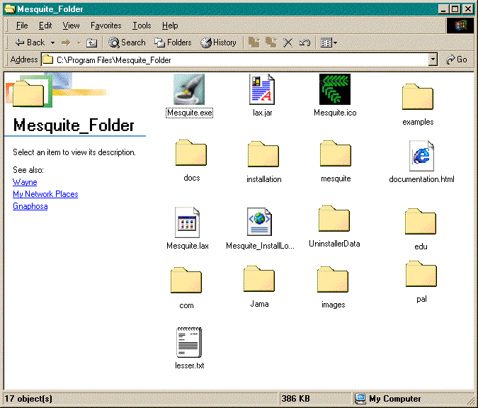

(Please email us ( )
with questions or comments about downloading Mesquite).
)
with questions or comments about downloading Mesquite).
NOTE: If you previously installed an older version of Mesquite, we recommend you delete the Mesquite_Folder/mesquite directory before installing the new version.
Requirements: JRE or JDK 1.1.8 or above; 1.4 or above recommended. (java.sun.com)
Instructions: Installation is a two step processes:
First, download and run the installer "mesquiteInstall.exe" (this installer was made using InstallAnywhere from www.zerog.com).
When you run the installer, it may ask you to select a Java Virtual Machine. It's best to choose one made by Sun, which will be in a directory named JRE or JDK (e.g., c:\Program Files\JavaSoft\JRE\1.3.1\bin\java.exe). It is also best to choose a more recent one (e.g., choose 1.4 over 1.3.1 over 1.2.2 over 1.1.8).
This should create the directory "Mesquite_Folder", and within it, the directory "mesquite" and several files, approximately as follows (the icons and details may differ).

Second, download and unzip the archive "mesquite.zip". It will contain one directory called "put contents in Mesquite Folder", which contains at least four other directories, "mesquite", "com", "images" and "example files". Place all of the contained directories within Mesquite Folder, so as to replace "mesquite" and add the other directories, to yield something like the following:

Mesquite can then be started up by starting up the executable "Mesquite". The first time Mesquite runs, a welcome dialog box will appear. Once Mesquite has finished loading, go to the File menu to open a file.
In the first step of the installation processes, the Mesquite package itself is not installed, just files that help Mesquite run. The Mesquite package is within the mesquite.zip archive. The reason we are burdening you with a two-step installation process is that, when future versions of Mesquite are posted online, you won't have to run the installer again (and we won't have to create new installers). You'll only have to download a new Mesquite system and replace the "mesquite" directory and the other directories.
If you had previously installed an older version of Mesquite, please delete the old Mesquite_Folder/mesquite/ directory before replacing it with the new one. If you merely copy the new mesquite/ into the location of the old, and let the system overwrite the contents, some old modules will remain because of the counterintuitive behavior of Windows in replacing directories.
If you are familiar with Java under Windows and prefer to start up programs from the DOS prompt, you can run Mesquite without having done the first step of the installation process, as long as your class paths to the virtual machine and so forth are prepared. Go to the DOS prompt and type:
jre -cp "<path to Mesquite Folder>\Mesquite_Folder" mesquite.Mesquite
or
java -cp "<path to Mesquite Folder>\Mesquite_Folder" mesquite.Mesquite
where <path to Mesquite Folder> might be something like C:\Program Files
If the current user directory is not "Mesquite_Folder", and Mesquite has not been run before, Mesquite will ask you to find the file "manual.html" which resides in the Mesquite Folder\docs\mesquite directory. This will help Mesquite find and remember where its files are.
Occasionally the menus of Mesquite will show incorrect headings (this is apparently due to a bug in the Java Virtual machine, not due to a bug in Mesquite). For this reason there is a Reset Menus item in the File menu; it should help restore the correct menus.
If you set Mesquite to be the default application to open NEXUS files (with the .nex extension), it should be able to open files given to it. However, under some circumstances it may claim the file was not found. Please report this.
More details of issues of using Mesquite under Windows are described in the Support page.